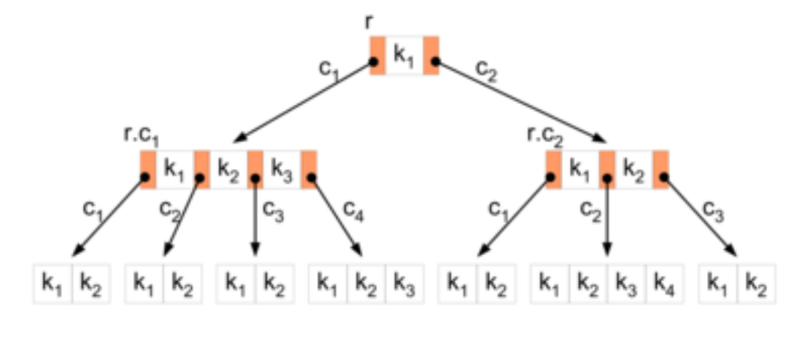
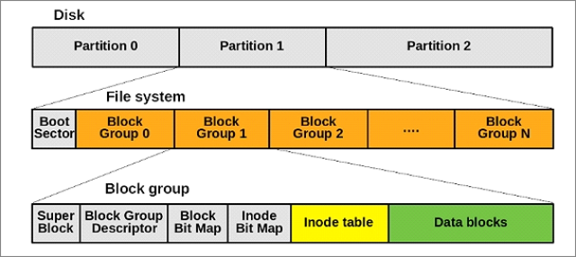
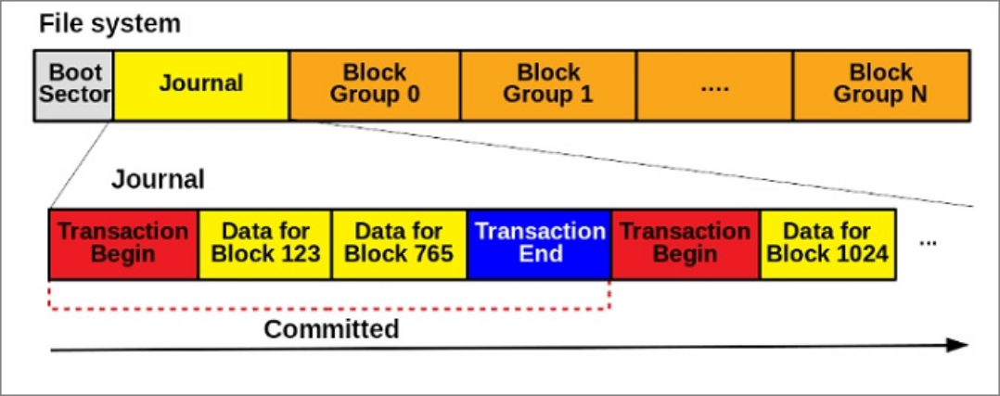
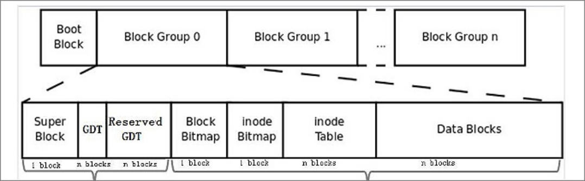

O que é
Um sistema de arquivos é a estrutura e a organização que um sistema operacional (SO) utiliza para gerenciar e guardar arquivos em uma unidade de armazanemanto (HD, SSD, Pen Drive etc).
Os principais sistemas de arquivos são: FAT, FAT16 e FAT32; HPFS; NTFS (usado pelo Windows); EXT2, EXT3 e EXT4 (usados pelo Linux); ReiserFS (usados em algumas distros Linux).
Clique nas imagens para ver elas maior
Árvore B+
Antes de falarmos dos sistemas de arquivos, precisamos entender o que é a árvore B+ (usado em banco de dados e em alguns sistema de arquivos, como NTFS e ReiferFS).
Uma árvore B é formada por vários nós/páginas, que é um conjunto de dados e apontadores para os seus filhos, cada apontador é chamado de chave. Uma página deve conter uma quantidade mínima de chaves, sendo definida pelo sistema de arquivos.
A página raíz (primeira, nada apontando para ela), não tem limite mínimo de chaves, mas tem um máximo.
Uma página folha é quando a página não tem apontadores para um filho.
A Árvore B+ permite organizar um arquivo de maneira que o processamento sequencial (característica até então pouco eficiente para árvores B) e aleatório de chaves seja eficiente.
FAT
FAT (File Allocation Table, tabela de alocação de arquivos) é um sistema de arquivos que contém a FAT na parte superior do volume (setor 0), contendo 2 cópias do FAT caso uma delas seja danificada. O FAT é alocado em clusters com tamanho determinado pelo tamanho do volume. É vital atualizar a tabela FAT, é demorado pois o HD/SSD precisa acessar o setor 0 sempre que a tabela é atualizada.
O tamanho, a quantidade dos clusters e o endereçamento (armazenado na FAT) é variável para cada versão, recebendo nomenclaturas como FAT16 e FAT32.
Esse sistema usa a nomenclatura de arquivo 8.3 e a tabela ASCII, o nome de um arquivo tem até 8 caracteres e extensão até 3, pode ser colocado qualquer caractere exceto [. " / \ [ ] : ; | = ,].
Vantagens: funciona bem com unidades menores (até 200MB).
Desvantagens: limite de 4GB e sistema de arquivos antigo.
HPFS
O HPFS tem a mesma organização de diretório que o FAT, os nomes dos arquivos cabem até 254 caracteres de byte duplo. O HD/SSD é dividido em setores físicos de 512 bytes e os arquivos recebe, atributos especiais.
Os diretórios e arquivos armazena metadados como dados de modificação e data e hora de acesso. As entradas de diretório apontam para o FNODE, que é um ponteiro para os dados do arquivo ou outras estruturas que apontam para o arquivo.
O HPFS tenta usar o máximo de setores contíguos, organizando em uma série de faxas de 8MB.
O Superbloco no setor 16 contém um ponteiro para o diretório raiz, se esse bloco for corrompido, todo conteúdo da partição será perdido.
O Bloco Sobressalente está no setor 17 e contém vários hotfixes para apontar logicamente um setor bom no lugar de um ruim, fazendo a Correção Dinâmica.
Vantagens: correção dinâmica e, eficiente para unidades entre 200MB e 400MB.
Desvantagens: se o superbloco for corrompido, todo conteúdo da unidade será perdido.
NTFS
O NTFS é semelhante ao FAT e HPFS, com a diferença de não possuir setores especiais, como tabela FAT ou Superbloco. É um sistema de arquivos recuperável e possui várias cópias da Tabela de Arquivos Mestre. Tem suporte a correção dinâmica.
O NTFS usa da árvore B+ (B+Tree) para organização dos arquivos.
O NTFS aumentou o tamanho dos arquivos e volumes, podendo suportar até 2^64 bytes e é alocado em clusters. Tem as mesmas restrições de nome de arquivo do FAT e do HPFS.
O NTFS foi e é o sistema de arquivos usado pelo Windows. O Linux é capaz de ler e gravar em NTFS, mas o SO não pode ser instalado nesse sistema de arquivos. O MacOS só é capaz de ler em NTFS.
Vantagens: funciona bem com grandes volumes sem perder desempenho.
Desvantagens: alta fragmentação levando a perda de perfomance.
FAT16 e FAT32
O tamanho dos clusters do FAT16 é de até 32KB, tem endereçamento de 16 bits e possui 65536 clusters, tendo tamanho de partição máxima 2GB.
O FAT32 tem endereçamento de 32 bits, e até 2^28 clusters, com cada clusters tendo mesmo tamanho do FAT16 (32KB), tendo tamanho de partição máxima de 2TB.
O FAT32 é o sistema de arquivos mais versátil, sendo compatível com praticamente todos SOs e com a maiora dos dispositivos.
Vantagens: funcionam bem com unidades removíveis (como pen drives) e são reconhecidos por diferentes SOs.
Desvantagens: limite de tamanho de arquivo e alta fragmentação.
EXT2
A partição EXT2 é dividida em vários blocos com 4KB cada, tendo tamanho de partição máxima de 2TB.
Cada bloco é subdividido em sub-blocos, com 512 bits cada.
Contém um superbloco de 1024 bits, armazenando dados sobre o Nó-i.
Nó-i é uma estrutura de dados de 128 bits e armazena metadados sobre os arquivos e os setores ocupados pelos arquivos.
São mostrados 32768 blocos, com um bit indicando se o bloco está livre ou não, os tamanhos dos blocos são dinâmicos e são agrupados blocos com mesmo nó-i.
O EXT2 não tem ferramenta de desfragmentação.
Vantagem: fragmentação mínima ou nenhuma.
Desvantagem: não possui Journaling.
EXT3
O EXT3 é semelhante ao EXT2, mas adiciona o Journaling, que é um registro sobre os metadados dos arquivos, sendo útil para manter a consistência dos arquivos em casos de falhas ou desligamentos inesperados.
O tamanho máximo de partição do EXT3 é de 16TB.
Vantagem: fragmentação mínima ou nenhuma.
Desvantagem: não possui verificação rápida.
EXT4
O EXT4 é semelhante ao EXT3, mas muito melhorado, tendo tamanho máximo de bloco aumentado para 1MB e tamanho máximo de partição de 1EB (Exabyte).
Contém o multiblock, permitindo alocar vários blocos de uma vez.
Contém o extents, que permite armazenar arquivos contiguamente em vários blocos.
Esse sistema de arquivos possui a alocação atrasada, aumentando espaços livres e evitando a fragmentação.
Os EXT2, EXT3 e EXT4 são os sistemas de arquivos padrão da maioria das distros Linux, sendo a melhor delas o EXT4.
Vantagem: fragmentação mínima ou nenhuma.
Desvantagens: incompatível com EXT2 e EXT3, risco de corromper arquivos em modo writeback.
ReiserFS
Tem semelhanças com o EXT3 e o NTFS, contendo a Árvore B+ e o Journaling.
Os arquivos se localizam em um estrutura semelhante a uma árvore.
Tem blocos de vários tamanhos, desde 512 bytes, até 8192 bytes.
Algumas distros Linux usam ReiserFS, como OpenSUSE por exemplo. Essas distros podem ser tanto instaladas em EXT ou em ReiserFS.
Vantagem: capaz de abrir vários arquivos pequenos de uma vez.
Desvantagem: alto consumo de CPU quando o disco é usado.